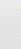
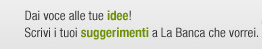
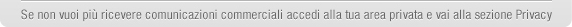

un altro passo e il tuo conto diventa ancora più comodo e completo: accredita gratuitamente lo stipendio e apri le porte a un mondo di vantaggi.
Se hai bisogno di aiuto entra nella tua area privata e chiedi aiuto a Paolo. Scrivi "Accredito stipendio" nella sua casella di dialogo e ti accompagner" alla pagina che stai cercando.
Continua a seguirci, altre novità in arrivo.
Il team di Webank
|  |  |
 |
 |
 | ||||||||
|  | ||||||||||||